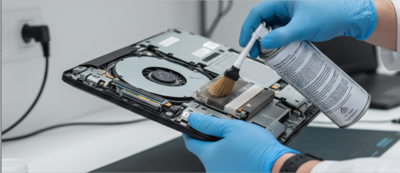
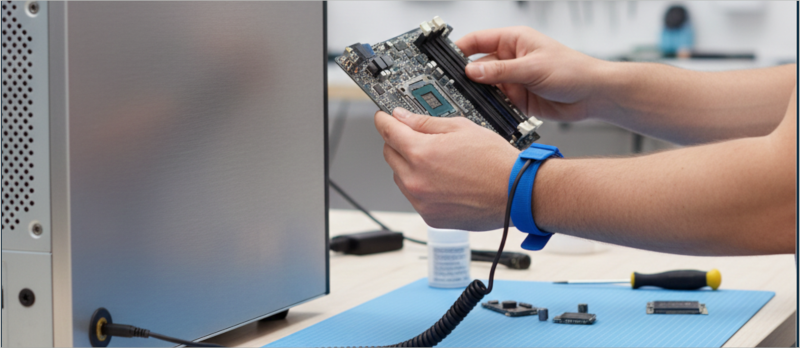
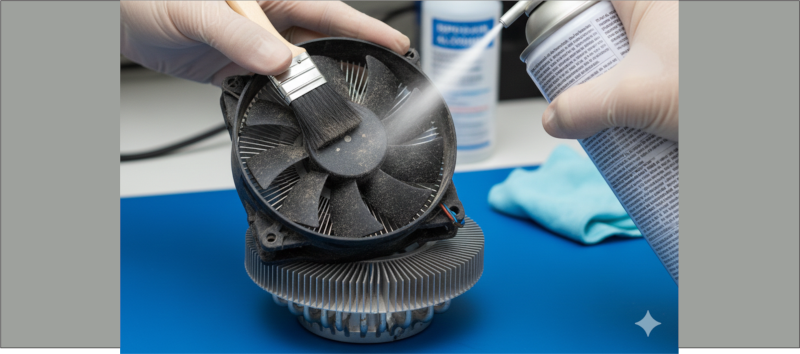
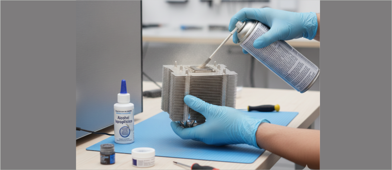
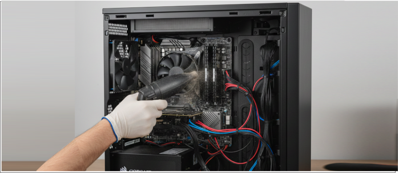
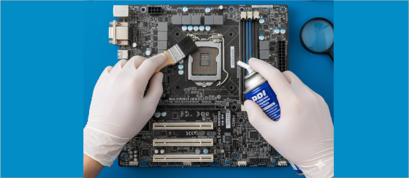
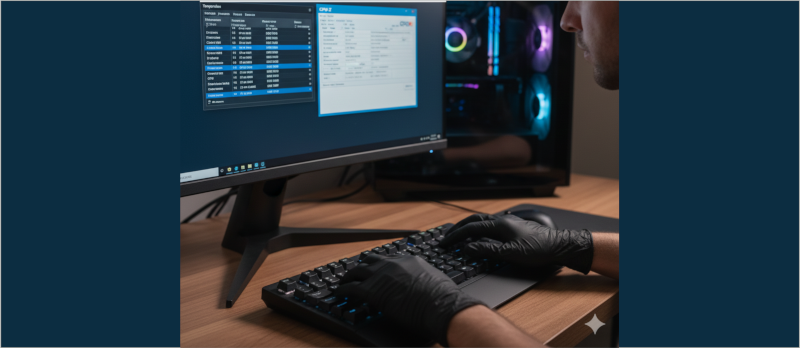
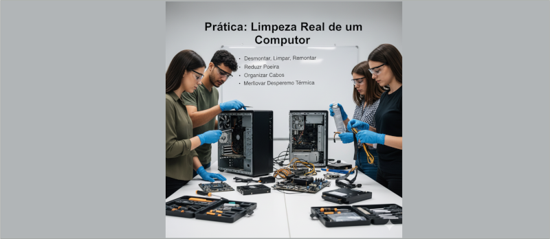

O que é Manutenção Preventiva?
É o processo de limpeza e inspeção periódica para evitar falhas, aquecimento,
lentidão e queima de componentes.
Deve ser realizada a cada 6 meses.

Cuidados com Eletricidade Estática (ESD)
A eletricidade estática pode queimar componentes sensíveis.
Toque em uma superfície metálica ou use pulseira antiestática.

Limpeza do Cooler
Use pincel, ar comprimido e álcool isopropílico.
Remova poeira das pás, rolamentos e dissipador lubrifique caso ele abra.

Troca de Pasta Térmica
Retire a pasta antiga com álcool isopropílico.
Aplique um ponto do tamanho de um grão de arroz no centro do processador.

Limpeza Interna do Gabinete
Remova poeira das ventoinhas, filtros, cantos e da fonte.
Organize os cabos para melhorar o fluxo de ar.

Limpeza da Placa-Mãe
Com pincel macio e ar comprimido, limpe slots, conectores e área dos VRMs.
Verifique capacitores estufados ou oxidação.

Verificação de Temperaturas
Após a limpeza, use programas como HWMonitor e CPU-Z
para verificar temperaturas do processador e da GPU.

Prática: Limpeza Real de um Computador
Em grupo, os alunos irão desmontar, limpar e remontar um computador real.
O objetivo é reduzir poeira, reorganizar cabos e melhorar o desempenho térmico.